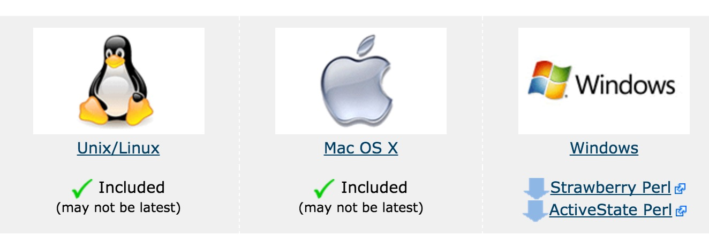
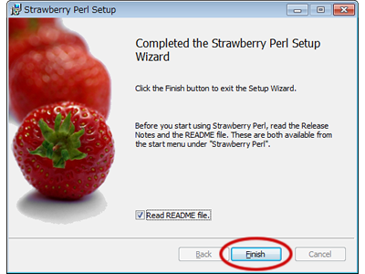

Perl 环境安装
在我们开始学习 Perl 语言前，我们需要先安装 Perl 的执行环境。
Perl 可以在以下平台下运行：
- Unix (Solaris, Linux, FreeBSD, AIX, HP/UX, SunOS, IRIX etc.)
- Win 9x/NT/2000/
- WinCE
- Macintosh (PPC, 68K)
- Solaris (x86, SPARC)
- OpenVMS
- Alpha (7.2 and later)
- Symbian
- Debian GNU/kFreeBSD
- MirOS BSD
- 等等...
很多系统平台上已经默认安装了 perl，我们可以通过以下命令来查看是否已安装：
$ perl -v This is perl 5, version 18, subversion 2 (v5.18.2) built for darwin-thread-multi-2level (with 2 registered patches, see perl -V for more detail) Copyright 1987-2013, Larry Wall ……
如果输出以上信息说明已安装，如果还未安装，可以看接下来的安装指导。
安装 Perl
我们可以在 Perl 的官网下载对应平台的安装包:https://www.perl.org/get.html

Unix 和 Linux 安装 Perl
Unix/Linux 系统上 Perl 安装步骤如下：
通过浏览器打开 http://www.perl.org/get.html。
下载适用于 Unix/Linux 的源码包。
下载 perl-5.x.y.tar.gz 文件后执行以下操作。
$ tar -xzf perl-5.x.y.tar.gz $ cd perl-5.x.y $ ./Configure -de $ make $ make test $ make install
接下来我们如果 perl -v 命令查看是否安装成功。
安装成功后，Perl 的安装路径为 /usr/local/bin ，库安装在 /usr/local/lib/perlXX, XX 为版本号。
Window 安装 Perl
Perl 在 Window 平台上有 ActiveStatePerl 和 Strawberry Perl 编译器。
ActiveState Perl和 Strawberry Perl最大的区别是 Strawberry Perl 里面有多包含一些 CPAN 里的模块， 所以Strawberry Perl 下载的安装文件有 80多M, 而ActiveState Perl 只有20M 左右。
我们这里使用了 Strawberry Perl 。
Window 系统上 Perl 安装步骤如下：
Strawberry 安装包链接： http://strawberryperl.com。
下载对应你系统的版本： 32bit 或 64bit 。
下载后双击打开，按安装向导一步步安装即可。

Mac OS 安装 Perl
Mac OS 系统一般默认已经安装了 Perl，如果未安装则执行以下步骤：
通过浏览器打开 http://www.perl.org/get.html。
下载适用于 Mac OS 的源码包。
下载 perl-5.x.y.tar.gz 文件后执行以下操作。
$ tar -xzf perl-5.x.y.tar.gz $ cd perl-5.x.y $ ./Configure -de $ make $ make test $ make install
执行成功后 Perl 的安装路径为 /usr/local/bin ，库安装在 /usr/local/lib/perlXX, XX 为版本号。
运行 Perl
Perl 有不同的执行方式。
1、交互式
我们可以在命令行中直接执行 perl 代码，语法格式如下：
$perl -e <perl code> # Unix/Linux 或 C:>perl -e <perl code> # Windows/DOS
命令行参数如下所示：
| 选项 | 描述 |
|---|---|
| -d[:debugger] | 在调试模式下运行程序 |
| -Idirectory | 指定 @INC/#include 目录 |
| -T | 允许污染检测 |
| -t | 允许污染警告 |
| -U | 允许不安全操作 |
| -w | 允许很多有用的警告 |
| -W | 允许所有警告 |
| -X | 禁用使用警告 |
| -e program | 执行 perl 代码 |
| file | 执行 perl 脚本文件 |
2、脚本执行
我们可以将 perl 代码放在脚本文件中，通过以下命令来执行文件代码：
$perl script.pl # Unix/Linux 或 C:>perl script.pl # Windows/DOS